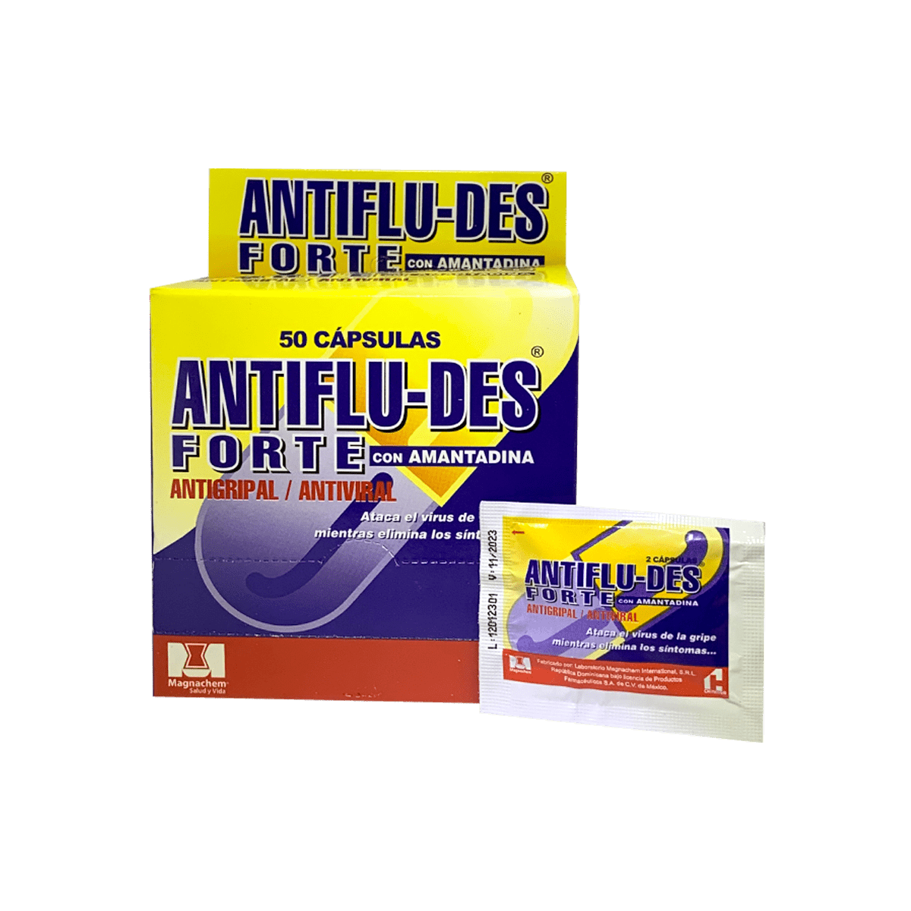

Medicamento combinado para presión alta resistente.
Leer más
Keotan 150 mg + Amlodipino 5 mg
Combinación para tratar la presión alta.
Leer más
Lotensor 2.5 mg
Ayuda a bajar la presión arterial.
Leer más
Lotensor 5 mg
Se usa para tratar la presión alta y proteger el corazón.
Leer más
Lotensor 10 mg
Ayuda a controlar la presión y prevenir problemas cardíacos.
Leer más
Olmedos 10 mg
Sirve para bajar la presión arterial.
Leer más
Olmedos 20 mg
Ayuda a controlar la presión alta.
Leer más
Olmedos 40 mg
Se usa para tratar la presión alta y proteger el corazón.
Leer más
Olmesar 10 mg
Sirve para bajar la presión arterial.
Leer más
Olmesar 20 mg
Ayuda a controlar la presión alta.
Leer más
Olmesar 40 mg
Se usa para tratar la presión alta y proteger el corazón.
Leer más
Olmesar 20 mg + Hidroclorotiazida 12.5 mg
Combinación para bajar la presión y eliminar líquidos.
Leer más
Olmesar 40 mg + Hidroclorotiazida 12.5 mg
Ayuda a controlar la presión y eliminar el exceso de agua del cuerpo.
Leer más
Plaquexil (dosis variable)
Ayuda a prevenir la formación de coágulos en la sangre.
Leer más
Valcard 80 mg
Sirve para bajar la presión arterial.
Leer más
Valcard 160 mg
Ayuda a controlar la presión y proteger el corazón.
Leer más
Valcard 320 mg
Se usa para tratar la presión alta resistente.
Leer más
Valcard 80 mg + Hidroclorotiazida 12.5 mg
Combinación para bajar la presión y eliminar líquidos.
Leer más
Valcard 160 mg + Hidroclorotiazida 12.5 mg
Ayuda a controlar la presión y eliminar el exceso de agua del cuerpo.
Leer más
Valcard 320 mg + Hidroclorotiazida 12.5 mg
Combinación para presión alta difícil de controlar.
Leer más
Valscard Plus 80 mg + Hidroclorotiazida 12.5 mg
Ayuda a bajar la presión y eliminar líquidos retenidos.
Leer más
Venator 5 mg
Relaja los vasos sanguíneos para bajar la presión arterial.
Leer más
Venator 10 mg
Se usa para tratar la presión alta y prevenir dolores en el pecho.
Leer más
Glucovance 500 2.5 Mg
Uso: Dosis baja, usada al iniciar tratamiento o en combinación con otros medicamentos.
🔹 Función: Ayuda a controlar el azúcar en sangre en personas con diabetes tipo 2.
Leer más
Glibenclamida 5Mg
Estimula el páncreas para que libere más insulina. Se recomienda tomar antes del desayuno o primera comida.
Leer más
Jarinu 25 Mg
Ayuda a reducir el azúcar en sangre en personas con diabetes tipo 2 al mejorar la acción de la insulina. Se toma una vez al día, con o sin alimentos.
Leer más
Mediabet 500
Metformina 500 mg . Controla el azúcar en sangre en diabetes tipo 2. Tomar según indicación médica.
Leer más
Mediabet 850
Metformina 850 mg Usado para mejorar el control glucémico en diabetes tipo 2. Tomar con alimentos.
Leer más
Viltrovan 50/850 mg
Combinación de vildagliptina y metformina. Se usa para mejorar el control del azúcar en sangre en diabetes tipo 2.
Leer más
Viltrovan 50/1000 mg
Combinación de vildagliptina y metformina en dosis alta. Indicado para diabetes tipo 2 cuando se requiere mayor control glucémico.
Leer más
Viltrevan M 50/800
La combinación de vildagliptina más metformina clorhidrato está contraindicada en:
· Pacientes con hipersensibilidad conocida a la vildagliptina o a cualquiera de los excipientes del producto.
· Cetoacidosis diabética o pre-coma diabética.
Leer más
Vildina 50 mg
Vildagliptina sola. Se usa para mejorar el control glucémico en adultos con diabetes tipo 2.
Leer más
Vildina 50/850 mg
Combinación de vildagliptina y metformina. Indicado para diabetes tipo 2 cuando la dieta y el ejercicio no son suficientes.
Leer más
Vildina 50/1000 mg
Vildagliptina + metformina en dosis alta. Mejora el control del azúcar en sangre en diabetes tipo 2.
Leer más
Glipox 850/50 mg
Combinación de metformina y vildagliptina. Se usa para controlar la glucosa en sangre en diabetes tipo 2.
Leer más
Glipox 1000/50 mg
Metformina + vildagliptina en dosis alta. Indicado para diabetes tipo 2 cuando se requiere mayor control glucémico.
Leer más
Glucoless 5/500 mg
Combinación de glimepirida y metformina. Ayuda a controlar el azúcar en sangre en diabetes tipo 2.
Leer más
Glucoless 5/850 mg
Glimepirida + metformina en dosis mayor. Indicado para diabetes tipo 2 cuando se requiere mejor control glucémico.
Leer más
Metfcard G 2/500 mg
Combinación de glimepirida y metformina. Se usa para mejorar el control glucémico en diabetes tipo 2.
Leer más
Metfcard G 2/850 mg
Glimepirida + metformina en dosis mayor. Indicado para diabetes tipo 2.
Leer más
Metfcard G 4/500 mg
Combinación de glimepirida y metformina. Ayuda a controlar el azúcar en sangre en diabetes tipo 2.
Leer más
Metfcard G 4/850 mg
Glimepirida + metformina en dosis alta. Indicado para diabetes tipo 2 con mayor requerimiento de control glucémico.
Leer más
Glipixor 2/500 mg
Combinación de glimepirida y metformina. Se usa para el control de la glucosa en sangre en diabetes tipo 2.
Leer más
Glipixor 4/850 mg
Glimepirida + metformina en dosis alta. Indicado para diabetes tipo 2 cuando se requiere mayor control glucémico.
Leer más
Metford 500 mg
Metformina sola. Se usa para reducir los niveles de glucosa en sangre en diabetes tipo 2.
Leer más
Metford 850 mg
Metformina sola en dosis mayor. Indicado para diabetes tipo 2 cuando se requiere mayor control glucémico.
Leer más
metformina 850 glibenclamida 5
Combinación de metformina y glibenclamida para el control de la glucosa en sangre en diabetes tipo 2. Tomar según indicaciones médicas.
Leer más
metformina 500
La metformina es un fármaco antidiabético utilizado en los diabéticos de tipo 2 para reducir los niveles elevados de glucosa post-prandial.
Leer más
Sumigran
Para migrañas fuertes. Tomar 1 tableta al inicio del dolor.
Leer más
Algho
Analgésico general para dolores leves o moderados.
Leer más
Garwell
Descongestionante para aliviar nariz tapada y problemas respiratorios.
Leer más
Laritox Té
Té herbal para aliviar la garganta irritada y la tos.
Leer más
Pain Max Té Antigripal
Té para aliviar síntomas gripales, fiebre y malestar general.
Leer más
Pain Max Antigripal
Pastillas para aliviar la gripe, fiebre y dolores leves.
Leer más
Tabcin Día
Medicamento antigripal para uso diurno, reduce fiebre y congestión.
Leer más
Winasorb Ultra
Jarabe que alivia dolores de cabeza intensos y fiebre rápidamente.
Leer más
Winasorb Gripe Multisíntomas
Jarabe para aliviar fiebre, dolor y congestión de la gripe.
Leer más
Winasorb Congestión
Jarabe para descongestionar nariz tapada y aliviar presión sinusal.
Leer más
Gelnorex Vita
Multivitamínico en pastilla con gelatina para recuperación general.
Leer más
Vinacard
es una vitamina liposoluble que se disuelve en la grasa y resulta esencial para el organismo dado que es un antioxidante que ayuda a proteger los ácidos grasos..
Leer más
Ponstan
Analgésico y antiinflamatorio para dolores musculares y articulares.
Leer más
Dorival
Alivia cólicos menstruales y dolores leves. Tabletas fáciles de tomar.
Leer más
Descongel Gripe
Antigripal con descongestionante para aliviar síntomas respiratorios.
Leer más
Chemitusin
Jarabe para aliviar la tos seca y reducir irritación.
Leer más
Cortax
Antiinflamatorio para aliviar dolor y reducir inflamaciones.
Leer más
Cecitro
Antialérgico para síntomas de alergia, como estornudos y picazón.
Leer más
Broncochem Té
Té para aliviar bronquitis, tos y problemas respiratorios leves.
Leer más
Alerplus
Antialérgico en cápsulas para reducir síntomas alérgicos.
Leer más

Antifludes Forte
Antigripal fuerte para síntomas severos de gripe y resfriado.
Leer más
Antifludes te
está indicado en el tratamiento de la gripe. Actúa contra el virus causante de la gripe (virus influenza tipo A), alivia los síntomas que la acompañan como fiebre, dolor muscular, dolor de cabeza, estornudos y escurrimiento nasal.
Leer más
Sinedol Cood
Analgésico con codeína para dolores intensos. Uso con precaución.
Leer más
Suprofen Cold
Antigripal con ibuprofeno para aliviar dolor y fiebre.
Leer más
Sinedol Ultra
Analgésico potente para dolores severos y fiebre alta.
Leer más
Bienaliv
Antigripal para síntomas leves y recuperación rápida.
Leer más
Ibufar Plus
Combinación de ibuprofeno y paracetamol para dolor y fiebre.
Leer más
Acordia
Medicamento utilizado para aliviar el dolor y la inflamación en diversas afecciones musculares y articulares.
Leer más
Balcobal
Suplemento de vitamina B12, indicado para tratar deficiencias de cobalamina y mejorar la función neurológica.
Leer más
Bergeron
Medicamento antiinflamatorio y analgésico para el tratamiento de dolores musculares y articulares.
Leer más
Bergeron R
Variante de Bergeron, utilizado para aliviar el dolor y la inflamación en procesos reumáticos.
Leer más
Celecoxib
Antiinflamatorio no esteroideo (AINE) selectivo, indicado para artritis, dolor agudo y dismenorrea.
Leer más
Celerax
Medicamento para el alivio del dolor muscular, contracturas y espasmos.
Leer más
Complerol
Medicamento analgésico y antiinflamatorio para dolores agudos y crónicos.
Leer más
Diclofenaco
Alivia el dolor y la inflamación en afecciones musculoesqueléticas y articulares.
Leer más
Diclo K Biotic
Combinación de diclofenaco y probióticos, indicado para dolor e inflamación con protección gástrica.
Leer más
Dexketoprofeno
Antiinflamatorio y analgésico de acción rápida para dolores musculares, articulares y menstruales.
Leer más
Dexkevitae
Alivia el dolor leve a moderado y reduce la inflamación en procesos agudos.
Leer más
Dolocoxib
Antiinflamatorio y analgésico para el tratamiento del dolor agudo y crónico.
Leer más
Dolo Artrisar
Indicado para el tratamiento del dolor articular y muscular, especialmente en artritis.
Leer más
Dolo MetaPlex
Alivia el dolor muscular y articular, y ayuda a reducir la inflamación.
Leer más
Dorixina
Relajante muscular y analgésico para contracturas y dolores musculares.
Leer más
Diclofenaco
Alivia el dolor y la inflamación en afecciones musculoesqueléticas y articulares.
Leer más
Enantyum
Antiinflamatorio y analgésico para dolores agudos, como dolor dental, muscular o menstrual.
Leer más
Etoricoxib
Antiinflamatorio selectivo para el tratamiento de artritis, dolor agudo y crónico.
Leer más
Finpal
Medicamento para el alivio del dolor neuropático y fibromialgia.
Leer más
Ibuprofeno 600
Antiinflamatorio no esteroideo (AINE) usado para aliviar dolor leve a moderado, fiebre e inflamación.
Leer más
Klosara
Utilizado para el tratamiento del dolor e inflamación en afecciones musculoesqueléticas.
Leer más
Loxofen
Antiinflamatorio y analgésico para dolores musculares, articulares y menstruales.
Leer más
Meloxicam 15
Antiinflamatorio no esteroideo (AINE) para el tratamiento del dolor y la inflamación.
Leer más
Melatax
Medicamento para el tratamiento del dolor y la inflamación en enfermedades reumáticas.
Leer más
Meloxil
Antiinflamatorio no esteroideo para el alivio del dolor y la inflamación.
Leer más
Meneparol
Utilizado para aliviar síntomas de la menopausia y dolores asociados.
Leer más
Mioflex
Relajante muscular para contracturas y dolores musculares.
Leer más
Mioflex B
Relajante muscular con vitaminas del complejo B para contracturas y dolor muscular.
Leer más
Mioflex Forte
Relajante muscular de acción fuerte para contracturas severas y dolor intenso.
Leer más
Naproxeno
Medicamento antiinflamatorio y analgésico para dolores musculares, articulares y menstruales.
Leer más
Nexar
Medicamento para el alivio del dolor neuropático y trastornos neurológicos.
Leer más
Paracetamol 500
Analgesico y antipirético utilizado para aliviar el dolor y reducir la fiebre.
Leer más
Piroxicam
Antiinflamatorio no esteroideo para el tratamiento de artritis y dolor muscular.
Leer más
Pregabalina
Indicado para el tratamiento del dolor neuropático, fibromialgia y ansiedad generalizada.
Leer más
Profenol
Medicamento analgésico y antiinflamatorio para dolores agudos y crónicos.
Leer más
Relax Complex
Relajante muscular para contracturas leves y dolor muscular.
Leer más
Relax Complex Forte
Relajante muscular de acción fuerte para contracturas severas y dolor intenso.
Leer más
Sinedol Forte
Analgésico potente para el alivio de dolores intensos y fiebre alta.
Leer más
Tramadol
Analgésico opioide para el tratamiento del dolor moderado a severo bajo prescripción médica.
Leer más
Supercox
Antiinflamatorio y analgésico para el tratamiento de dolor agudo y crónico.
Leer más
Valcobal
Suplemento de vitamina B12 para tratar deficiencias y mejorar la función nerviosa.
Leer más
Vitomagnus
Suplemento multivitamínico para mejorar el estado general y la energía.
Leer más
Vitomax
Complejo vitamínico para fortalecer el sistema inmunológico y la vitalidad.
Leer más
Voltaren
Antiinflamatorio y analgésico para el alivio del dolor muscular, articular y lesiones deportivas.
Leer más
Api e
Suplemento de vitamina E, antioxidante que ayuda a proteger las células del daño, fortalece el sistema inmunológico y contribuye a la salud de la piel y los ojos.
Leer más
Apeten
Estimulante del apetito para niños y adultos. Ayuda a mejorar la nutrición en estados de debilidad o anorexia.
Leer más
Belivron
Multivitamínico para combatir carencias nutricionales, fatiga y falta de apetito. Indicado para fortalecer el sistema inmunológico y mejorar el estado general.
Leer más
Panda Pediátrico
Multivitamínico infantil para el desarrollo y crecimiento. Contiene vitaminas y minerales que apoyan el metabolismo y la formación de tejidos.
Leer más
Apelvit
Estimulante del apetito y multivitamínico. Tratamiento de deficiencias vitamínicas causadas por enfermedades o mala alimentación.
Leer más
Prolyn
Vitaminas del complejo B más lisina para niños. Promueve el apetito y el crecimiento adecuado.
Leer más
Viovit Jarabe
Multivitamínico para niños, rico en vitaminas A, C, D y complejo B. Ayuda al fortalecimiento general y sistema inmunológico.
Leer más
Viovit Tabletas
Multivitamínico en tabletas para adultos. Provee vitaminas y minerales esenciales para la salud diaria.
Leer más
Crecivit Gotas
Suplemento vitamínico con vitaminas A, D, E, C y complejo B en gotas. Indicado para prevenir y tratar deficiencias vitamínicas en niños.
Leer más
Crecivit Jarabe
Suplemento multivitamínico en jarabe con vitaminas A, D, E, C y complejo B. Ayuda al crecimiento y desarrollo saludable de los niños.
Leer más
Vitelnum
Cápsulas o perlas multivitamínicas con acción antioxidante. Mejora el estado general y protege las células del daño oxidativo.
Leer más
Vicasol
Solución gotas pediátricas con vitaminas A, D3 y C. Fortalece el sistema inmunológico y apoya el desarrollo infantil.
Leer más
Vicadel
Vitaminas A, D y E en gotas o tabletas para niños y adultos. Refuerza el sistema inmunológico.
Leer más
Vicadel FN
Fórmula especial para niños con vitaminas A y D. Facilita la administración pediátrica.
Leer más
Oxivit
Cápsulas antioxidantes para adultos. Protege contra el estrés oxidativo y mejora energía.
Leer más
Preoxid
Suplemento antioxidante en cápsulas. Ayuda en la protección celular y mejora el sistema inmune.
Leer más
Inmuvit Q10
Contiene Coenzima Q10 y vitaminas antioxidantes. Aumenta la energía celular y apoyo inmunológico.
Leer más
Aquarit
Multivitamínico con omega-3 y antioxidantes para niños. Promueve desarrollo cognitivo y físico.
Leer más
Suplerit
Tabletas multivitamínicas con hierro. Combate anemia y mejora niveles de energía.
Leer más
Buclicil Hierro
Jarabe con hierro y vitaminas para anemia. Mejora la producción de glóbulos rojos.
Leer más
Suplevit Prenatal
Multivitamínico para embarazadas. Contiene ácido fólico, hierro y vitaminas esenciales para gestación.
Leer más
Viovit Prenatal
Multivitamínico especializado para gestantes. Apoya desarrollo fetal y salud materna.
Leer más
Falcifor Prenatal
Suplemento con ácido fólico y vitaminas para embarazo. Previene anemia y defectos del tubo neural.
Leer más
Euro Calcio Natal
Tabletas con calcio y vitaminas prenatales. Favorece la formación ósea del bebé y salud ósea materna.
Leer más
Matervit
Multivitamínico para embarazadas y lactantes. Aporta nutrientes necesarios durante y después del embarazo.
Leer más
Premamá
Suplemento vitamínico para gestación. Incluye ácido fólico, hierro y vitaminas.
Leer más
Natale
Complejo prenatal con ácido fólico y vitaminas esenciales. Apoya el desarrollo fetal y bienestar materno.